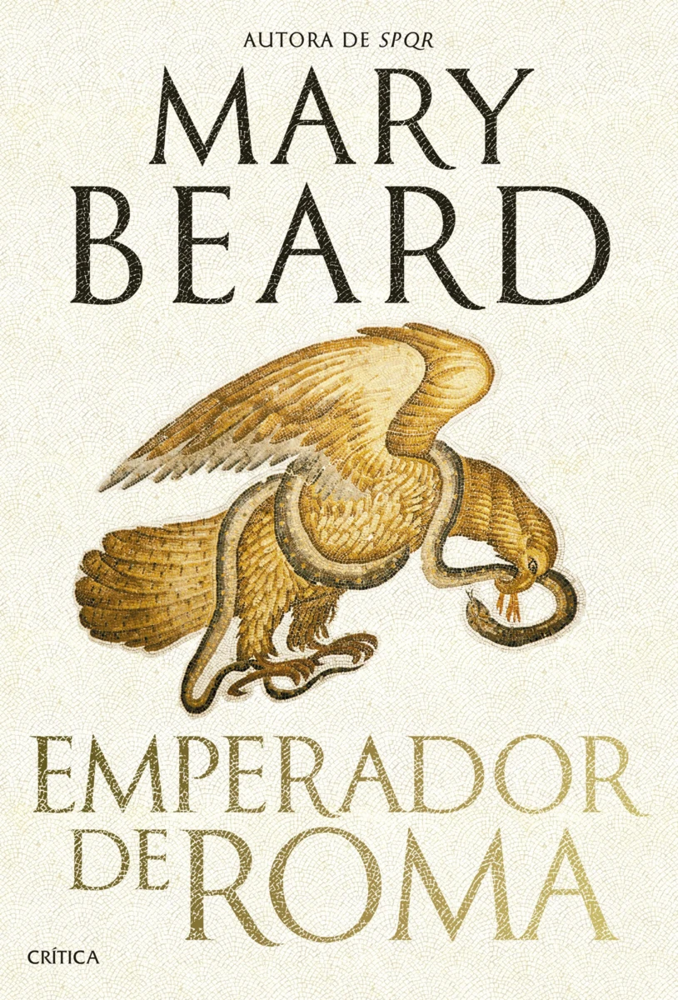

|  |
Libro: Emperador de Roma autor: Mary Beard Vuelve Mary Beard con la continuación de SPQR. Una nueva manera de ver el Imperio Romano "Un relato arrollador del mundo social y político de los emperadores romanos por "la clasicista más famosa del mundo". —The Guardian |
|
Libro: LOOR autor: Luis García-Rey Premio Primavera de Novela 2024. "Ácido. Moderno. Único. Larga vida al nuevo rey de la novela negra". Dos asesinatos, una investigación a ritmo frenético y un final que no olvidarás. |
|

|
Libro: Tu cerebro tiene hambre autor: Boticaria García ¿Qué podemos hacer frente al hambre emocional? ¿Cuáles son las estrategias que funcionan realmente para perder grasa? ¿Es más importante la dieta o el ejercicio? ¿Son para mí los medicamentos para la obesidad que triunfan en TikTok? ¿Podemos desafiar a nuestros genes o nos tenemos que conformar con el michelín que traemos de serie? "Este es el libro definitivo que te dará respuesta a estas y otras muchas preguntas relacionadas con el adelgazamiento". |

|
Libro: Esperando al diluvio autor: Dolores Redondo salvaje asesino en serie. Una búsqueda hasta el último latido. Una ciudad amenazada por un diluvio. Entre los años 1968 y 1969, el asesino al que la prensa bautizaría como John Biblia mató a tres mujeres en Glasgow. Nunca fue identificado y el caso todavía sigue abierto hoy en día. En esta novela, a principios de los años ochenta, el investigador de policía escocés Noah Scott Sherrington logra llegar hasta John Biblia, pero un fallo en su corazón en el último momento le impide arrestarlo |